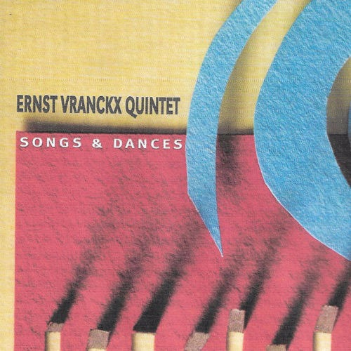

Piano · Compositie
Ernst
Vranckx

“Het is gek, maar tien, vijftien jaar geleden componeerde haast geen enkele jonge musicus. Nu schrijft iedereen songs. Maar er zijn weinig goede componisten. Ernst is een van de goede. Ik hou van zijn songs, ze vertellen me iets.”
De Standaard — interview door Karel Van KeymeulenErnst Vranckxpiano
David Helmbas
Kris Duerinckxdrums
FeaturingHayden Chisholmsax, vocals
ProductieRalf KemperRiverside, Keulen
Opgenomen in mei 2022 in de Riverside Studio’s in Keulen, met een kwartet dat al in 2019 werd gevormd.
Hayden Chisholm ontpopt zich als een authentieke crooner met het warme timbre van een Leonard Cohen in het titelnummer, in de standard ‘The Nearness of You’ en de traditional ‘Aura Lee’. Zijn kleurrijke saxofoonklank doet denken aan zijn samenspel met John Taylor.
Op de covers na tekende Vranckx voor alle composities: het speelse ‘Basil’s Hopscotch’, het door Bill Evans beïnvloede ‘Sketches of Pain’, de cooljazz van ‘Gorgeous Tree’ en een herwerkte ‘A Child’s Blessing’.
Eden River Records · ERR-CD-25

| Titel | Bezetting | Cat. nr. | ||
|---|---|---|---|---|
| Black Is The ColourErnst Vranckx Trio ft. Hayden Chisholm | Helm · Duerinckx · Chisholm | ERR-CD-25 | LuisterKoop cd |
 | Things As They AreErnst Vranckx Trio | Ulrich · Duerinckx | ERR-DD-06 | LuisterKoop cd |
 | Songs & DancesErnst Vranckx Quintet | Blondiau · Defoort · Lievestro · Pardon | W.E.R.F. 023 | Luister |
 | A Child’s BlessingQuartet feat. Kenny Wheeler | Wheeler · Defoort · Lievestro · Van Oosterhout | W.E.R.F. 013 | Luister |
 | AquarelleErnst Vranckx & Stefan Bracaval | Lievestro · Pardon · B. Joris · Ruocco · C. Joris | Lyrae 9609006 | Koop cd |
Ernst Vranckx, geboren te Leuven op 3 april 1966, begint zijn muzikale carrière eind jaren ’80. In 1994 wint hij de Prix Nicolas Dor met fluitist Stefan Bracaval; samen nemen ze het album “Aquarelle” op.
Hierop volgt zijn werk met de Chris Joris Experience, waar hij een deel van de composities en arrangementen voor zijn rekening neemt. Zijn song “The Miner’s Tale” wordt opgepikt in de Verenigde Staten en Canada.
Een samenwerking met trompettist Kenny Wheeler resulteert in “A Child’s Blessing” voor W.E.R.F.; hetzelfde label brengt zijn kwintet-album “Songs & Dances” uit.
Sinds 2015 werkt hij met de Duitse producer Ralf Kemper voor Eden River Records: “Things As They Are” (2020) en “Black Is The Colour” (2024).

“Ernst Vranckx toont zich een meesterverteller in geladen ballads … Helemaal een rustbaken in deze hectische tijd.”
“Ses compositions sont superbes et son univers est subtil, riche harmoniquement et mélodiquement. Beaucoup de raffinement … Un régal!”
“Een integer coloriet van cooljazz, een fris en bezield album.”
“Schakel uw telefoon uit, trek de netwerkkabels uit de muren en laat ‘Things As They Are’ van Ernst Vranckx Trio door de speakers blazen.”
“Un disque mélancolique mais envoûtant.”
“The music spins a hypnotic, methodically built web of mellow harmonies around intricately structured compositions.”
“Eén van onze meest inventieve componisten. Zijn werk straalt rust, opbouw en schakering uit … Klasse.”
“… Le plat pays est vraiment grand. Il faut y ajouter aujourd’hui le nom de Ernst Vranckx.”